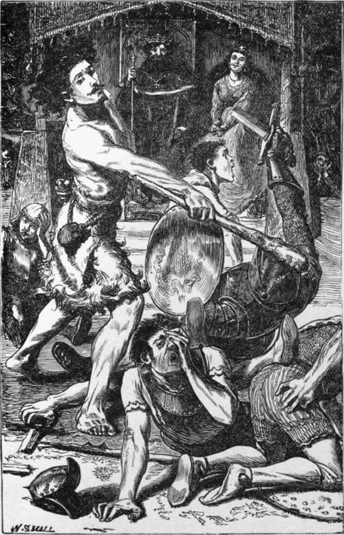

Jack And His Comrades
Description
This section is from the book "Legendary Fictions Of The Irish Celts", by Patrick Kennedy. Also available from Amazon: Legendary Fictions of the Irish Celts.
Jack And His Comrades
Once there was a poor widow, and often there was, and she had one son. A very scarce summer came, and they didn't know how they'd live till the new potatoes would be fit for eating. So Jack said to his mother one evening, "Mother, bake my cake, and kill my cock, till I go seek my fortune; and if I meet it, never fear but I'll soon be back to share it with you." So she did as he asked her, and he set out at break of day on his journey. His mother came along with him to the bawn (yard) gate, and says she,-"Jack, which would you rather have, half the cake and half the cock with my blessing, or the whole of 'em with my curse ?" " O musha, mother," says Jack, "why do you ax me that question ? sure you know I wouldn't have your curse and Darner's1 estate along with it." "Well, then, Jack," says she, "here's the whole tote (lot) of'em, and my thousand blessings along with them." So she stood on the bawn ditch (fence) and blessed him as far as her eyes could see him.
Well, he went along and along till he was tired, and ne'er a farmer's house he went into wanted a boy.2 At last his road led by the side of a bog, and there was a poor ass up to his shoulders near a big bunch of grass he was striving to come at. " Ah, then, Jack asthore," says he, "help me out or I'll be dlirowuded." "Never say't twice," says Jack, and he pitched in big stones and scraws (sods) into the slob, till the ass got good ground under him. " Thank you, Jack," says he, when he was out on the hard road ; " I'll do as much for you another time. Where are you going?" "Faith, I'm going to seek my fortune till harvest comes in, God bless it!" " And if you like," says the ass, " I'll go along with you ; who knows what luck we may have ! " " With all my heart; it's getting late, let us be jogging."
Well, they were going through a village, and a whole army of gorsoons 3 were hunting a poor dog with a kittle tied to his tail. He ran up to Jack for protection, and the ass let such a roar out of him, that the little thieves took to their heels as if the ould boy (the devil) was after them. " More power to you, Jack ! " says the dog. " I'm much obleeged to you : where is the baste 4 and yourself going?" "We're going to seek our fortune till harvest comes in." "And wouldn't I be proud to go with you ! " says the dog, "and get shut (rid) of them ill-conducted boys ; purshuin' to 'em ! " " Well, well, throw your tail over your arm and come along."
1 A rich Dublin money-lender, contemporary with Dr. Jonathan Swift, and commemorated by him in an appropriate lament. Darner is to the Irish peasant what Croesus was to the old Greeks.
2 We must beg rigid grammarians to excuse some solecisms, without which the peasant idiom could not be truly given.
3 Garrons, boys. In the counties of the Pale, the earliest colonized by the English, several Norman-French words and expressions, long obsolete in England, may still be heard.
4 We are anxious in the expressions put into the mouths of the characters to preserve the idiom, but not always to inflict the pronunciation on the reader. English youths and maidens are requested to recollect that the g in the final ing is seldom sounded ; that ca and ei get the sound of a in rare : that dr and are pronounced dhr and thr;-, and der and ter, when not in the first syllable of a word, are sounded dher and ther. The Irish peasant never errs in the pronunciation of ie. So the reader may set down any sketch or story in which he finds praste, belave, thafe, as the composition of one thoroughly ignorant of Irish pronunciation or phraseology.
They got outside the town, and sat down under an old wall, and Jack pulled out his bread and meat, and shared with the dog; and the ass made his dinner on a bunch of thistles. While they were eating and chatting, what should come by but a poor half-starved cat, and the moll-row he gave out of him would make your heart ache. "You look as if you saw the tops of nine houses since breakfast," says Jack; "here's a bone and something on it." " May your child never know a hungry belly!" says Tom; "it's myself that's in need of your kindness. May I be so bold as to ask whereas are all going ? " " We're going to seek our fortune till the harvest comes in, and you may join us if you like." "And that I'll do with a heart and a half," says the cat, " and thank'ee for asking me."
Off they set again, and just as the shadows of the trees were three times as long as themselves, they heard a great cackling in a field inside the road, and out over the ditch jumped a fox with a fine black cock in his mouth. " Oh, you anointed villian ! " says the ass, roaring like thunder. " At him, good dog!" says Jack, and the word wasn't out of his mouth when Coley was in full sweep after the Moddhera Rua (Red Dog). Reynard dropped his prize like a hot potato, and was off like shot, and the poor cock came back fluttering and trembling to Jack and his comrades. " O musha, naybours!" says he, "wasn't it the hoith o' luck that threw you in my way! Maybe I won't remember your kindness if ever I find you in hardship ; and where in the world are you all going? " " We're going to seek our fortune till the harvest comes in ; you may join our party if you like, and sit on Neddy's crupper when your legs and wings are tired."
Well, the march began again, and just as the sun was gone down they looked around, and there was neither cabin nor farmhouse in sight. " Well, well," says Jack, " the worse luck now the better another time, and it's only a summer night after all. We'll go into the wood, and make our bed on the long grass." No sooner said than done. Jack stretched himself on a bunch of dry grass, the ass lay near him, the dog and cat lay in the ass's warm lap, and the cock went to roost in the next tree.
Well, the soundness of deep sleep was over them all, when the cock took a notion of crowing. " Bother you, Cuileach Dhu (Black Cock)!" says the ass : " you disturbed me from as nice a wisp of hay as ever I tasted. What's the matter ? " " It's daybreak that's the matter: don't you see light yonder?" "I see a light indeed," says Jack, "but it's from a candle it's coming, and not from the sun. As you've roused us we may as well go over, and ask for lodging." So they all shook themselves, and went on through grass, and rocks, and briars, till they got down into a hollow, and there was the light coming through the shadow, and along with it came singing, and laughing, and cursing. " Easy, boys ! " says Jack : " walk on your tippy toes till we see what sort of people we have to deal with." So they crept near the window, and there they saw six robbers inside, with pistols, and blunderbushes, and cutlashes, sitting at a table, eating roast beef and pork, and drinking mulled beer, and wine, and whisky punch.

Continue to:
Tags
fiction, Irish, Celtic myths, sacred text, St. Patrick, stories